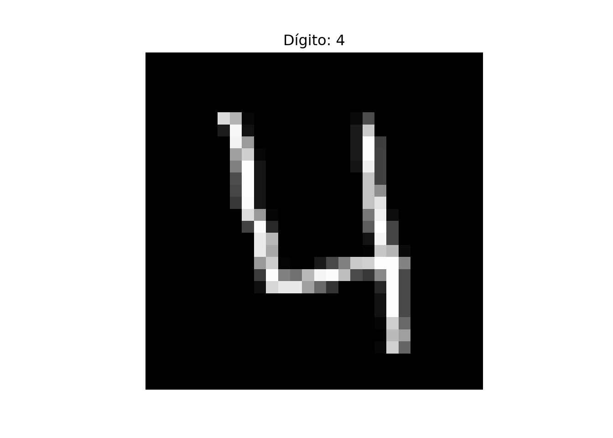

O MNIST (“Modified National Institute of Standards and Technology”) é, na prática, o conjunto de dados equivalente ao “Hello World” na área de visão computacional. Desde o seu lançamento, em 1999, esse conjunto de dados clássico, composto por imagens de dígitos escritos à mão, tem servido como base para avaliar (benchmarking) algoritmos de classificação. À medida que novas técnicas de aprendizado de máquina surgem, o MNIST continua sendo um recurso confiável tanto para pesquisadores quanto para estudantes.
Nesta competição, seu objetivo é identificar corretamente dígitos a partir de um conjunto de dados que contém dezenas de milhares de imagens escritas à mão. Incentivamos você a experimentar diferentes algoritmos para descobrir, na prática, o que funciona bem e como as diferentes técnicas se comparam.
Os dados utilizados nas análises posteriores foram obtidos do link https://www.kaggle.com/competitions/digit-recognizer. Ou seja, o conjunto de dados é uma das competições da plataforma Kaggle, plataforma utilizada por interessados em aprender ciência de dados. O objetivo nesta competição é pegar uma imagem de um único dígito escrito à mão e determinar qual é esse dígito.
# Selecionar a primeira linha (excluindo a coluna 'label')indice=3label = train.iloc[indice, 0]pixel_data = train.iloc[indice, 1:].valuesprint(label)
4
# print(pixel_data)
import matplotlib.pyplot as plt# Remodelar o vetor de 784 posições para uma matriz 28x28image_matrix = pixel_data.reshape(28, 28)# image_matrix
# Exibir a imagemplt.imshow(image_matrix, cmap="gray")plt.title(f"Dígito: {label}")plt.axis("off")
(-0.5, 27.5, 27.5, -0.5)
plt.show()

# Selecionar a primeira linha (excluindo a coluna 'label')indice=100label = train.iloc[indice, 0]pixel_data = train.iloc[indice, 1:].valuesprint(label)
9
# print(pixel_data)
import matplotlib.pyplot as plt# Remodelar o vetor de 784 posições para uma matriz 28x28image_matrix = pixel_data.reshape(28, 28)# image_matrix
# Exibir a imagemplt.imshow(image_matrix, cmap="gray")plt.title(f"Dígito: {label}")plt.axis("off")
Vários modelos foram utilizados com os dados train.csv, mas somente o modelo Extra Trees Classifier foi utilizado nos estudos seguintes
Definição de novas amostras de treino e teste
# Shuffle your dataset shuffle_df = train.sample(frac=1,random_state=123)# Define a size for your train set train_size =int(0.7*len(train))# Split your dataset train_set = shuffle_df[:train_size]test_set = shuffle_df[train_size:]
Description Value
0 Session id 123
1 Target label
2 Target type Multiclass
3 Original data shape (29399, 785)
4 Transformed data shape (29399, 785)
5 Transformed train set shape (20579, 785)
6 Transformed test set shape (8820, 785)
7 Numeric features 784
8 Preprocess True
9 Imputation type simple
10 Numeric imputation mean
11 Categorical imputation mode
12 Fold Generator StratifiedKFold
13 Fold Number 10
14 CPU Jobs -1
15 Use GPU False
16 Log Experiment False
17 Experiment Name clf-default-name
18 USI 3931
<pycaret.classification.oop.ClassificationExperiment object at 0x0000029B3C3FEE90>